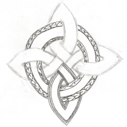
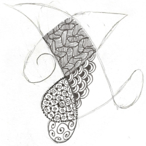
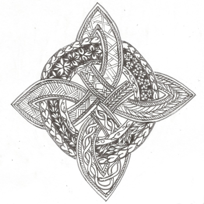
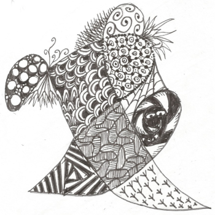
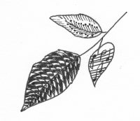

Being creative will help you enjoy life. It engenders a spirit of gratitude. It develops latent talent, sharpens your capacity to reason, to act, and to find purpose in life. It dispels loneliness and heartache. It gives a renewal, a spark of enthusiasm, and zest for life.
-Elder Richard G. Scott

Zen Doodle is a form of art. But unlike most forms of art no talent or teacher is required to make something you can truly enjoy making. It will almost instantly take you into right-brain mode and give you a chance to just enjoy the flow without the judment of your left brain. It doesn't have to look like anything in particular so it can look like anything.
Step 1: Start with a design. It can be a scribble or a sketch. The only requirement is that it has cells, enclosed spaces that are clearly separated and can be filled with a design.

Step 2: Pick a design and start embellishing the lines and/or the cells. If you're short on ideas I suggest you start with dots. Big or small, spread them apart a bit. Then start adding some details. Make them into music notes, or give them antenae, add
circles around them to make eyes, add swirls around, play dot to dot. Add some thickness to some of the lines, give it some variety and you'll be surprised with what you come up with.
After you've experimented a bit and seen what you can just do with dots check our links above for a ideas people have online. Look at it and see what you can do with the idea. Don't worry about making yours look just like theirs that's not the point. Not even close.
After you've experimented a bit and seen what you can just do with dots check our links above for a ideas people have online. Look at it and see what you can do with the idea. Don't worry about making yours look just like theirs that's not the point. Not even close.




